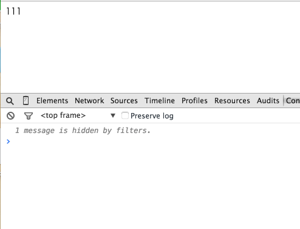

自定义绑定
avalon1.5新添加的API,avalon.directive, 用于快速创建一种全新的指令!
过去avalon自定义绑定比较麻烦,非常影响avalon推广,也不利于业务上各种功能的开发,新的定义方式将变得非常简单
avalon.directive(name, {
init: function(binding) {
//在这里处理binding.expr属性
},
update: function(value, oldValue) {
//value是binding.expr经过解析得到的当前VM属性的值
//oldValue是它之前的值
},
})拿最简单的data绑定来说吧:
avalon.directive("data", {
priority: 100,
update: function(val) {
var elem = this.element
var key = "data-" + this.param
if (val && typeof val === "object") {
elem[key] = val
} else {
elem.setAttribute(key, String(val))
}
}
})我们发现它没有init回调,init主要是对binding.expr进行加工,或绑定事件的,它这些都不需要, 就会直接返回原始值.比如说,<div ms-data-xxx="yyy"< 这里的属性会抽取成下面一个对象:
var binding = {
name: "ms-data-xxx",
expr: "yyy",
type: name,
element: DIVElement,
param: "xxx",
oneTime: false,
uuid: //框架会在这里生成一个UUID给它
priority: //框架会根据上面的定义,计算出来,大概是1000+ ;
}假如此时vm.yyy = 999; 那么第一次update时,value与oldValue分别为 999, undefined
对于用户来说,priority一般不需要设置, 其计算公式为
//详见 scanAttr priority: (directives[type].priority || type.charCodeAt(0) * 10) + (Number(param.replace(/\D/g, "")) || 0)
此外,如果你的绑定需要绑定一些事件来监听用户行为,那么你得在init或update添加一个roolback回调,在里面解绑定事件.
update方法中的this就是init的传参binding
那么我们做一下简单的例子吧:
<!DOCTYPE html>
<html>
<head>
<meta charset="UTF-8">
<meta name="viewport" content="width=device-width, initial-scale=1.0">
<script src="avalon.js">
</script>
<script>
avalon.directive("foo", {
init: function (binding) {
var elem = binding.element
var vmodels = binding.vmodels
var remove = avalon(elem).bind("click", function () {
elem.innerHTML = new Date - 0
for (var i = 0, v; v = vmodels[i++]; ) {
if (v.hasOwnProperty(binding.expr)) {
v[binding.expr] = elem.innerHTML
break
}
}
})
binding.roolback = function () {
avalon(elem).unbind("click", remove)
}
},
update: function (value, oldValue) {
this.element.innerHTML = value
}
})
var vm = avalon.define({
$id: "test",
aaa: 111
})
vm.$watch("aaa", function (a, b) {
console.log(a, b)
})
</script>
</head>
<body>
<div ms-controller="test">
<div ms-foo="aaa">点我</div>
</div>
</body>
</html>

别看例子简单,其实它是除duplex外又一个新的双工绑定!